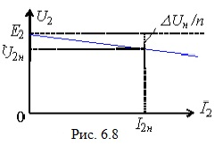
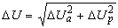
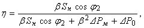

6.4.2. Внешняя характеристика трансформатора
Вектор ZкI1 (см. рис. 6.7б) соответствует потерям напряжения в трансформаторе при передаче электрической энергии от сети к нагрузке, что отражает внешняя характеристика трансформатора U2 = f(I).
Обращаясь к схеме рис. 6.7а и векторной диаграмме (рис. 6.7б), запишем уравнение внешней характеристики трансформатора
U'2 = U1н – ZкI1 = U1н – ZкI'2.
Поделив это уравнение на коэффициент трансформации n, получим
U2 = U2x – Z2I2 или U2 ≈ E2 – Z2I2, где E2 ≈ U2x.
(6.12)
Внешняя характеристика трансформатора при RL-нагрузке изображена на рис. 6.8. На практике её строят по двум точкам: U2x = E2 при I2 = 0 и U2 = U2н при I2 = I2н.

Падение напряжения в трансформаторе ΔUн ≈ ZкI1н ≈ ZкI2н/n. Напряжение короткого замыкания трансформатора ZкI1н (см. опыт КЗ) U1к ≈ (0.05...0.15)U1н ≈ ΔUн.
Если обозначить коэффициент нагрузки β = I1/I1н ≈ I2/I2н, то падение напряжения ΔU в трансформаторе при любой нагрузке β
ΔU = βΔUн = βZкI1н ≈ βZкI2н/n = βU1к.
(6.13)
Так как сопротивление Zк = Rк + jXк, то падение напряжения ΔU можно разложить на активную и реактивную составляющие:
ΔUa = βRкI1н ≈ βRкI2н/n; ΔUp = βXкI1н ≈ βXкI2н/n.
Тогда падение напряжения в трансформаторе при любой нагрузке
.
При заданном коэффициенте мощности нагрузки cosφ2 падение напряжения на трансформаторе
ΔU = β(ΔUacosφ2 + ΔUpsinφ2).
КПД трансформатора при заданных коэффициентах β и cosφ2
(6.14)


где Sн = U1нI1н и Sн = √3U1нI1н – номинальные мощности соответственно однофазного и трёхфазного трансформаторов.